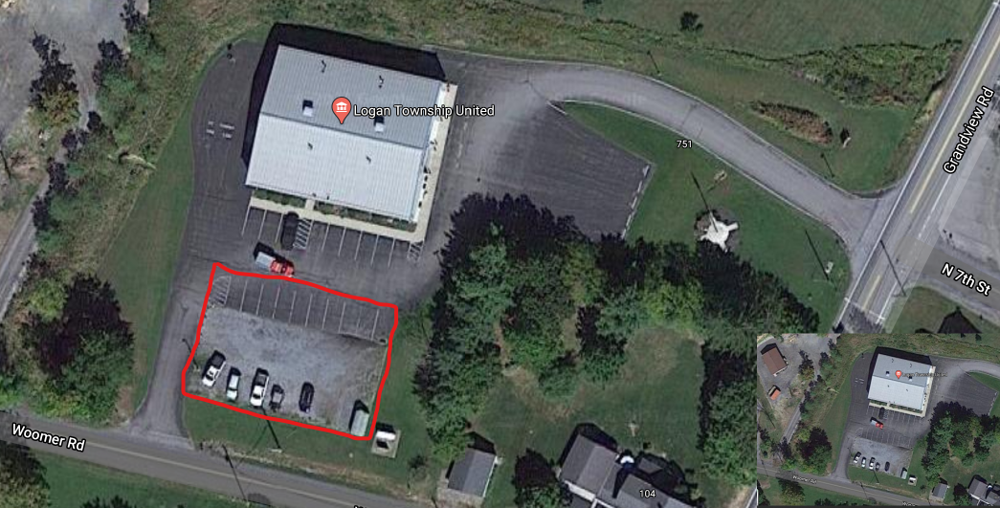

Grandview Firehall
Logan Township United Fire Department Station 18
611 Grandview road
Altoona, PA 16601
Google Maps Link

Parking is to be in the highlighted area only. Please leave the parking spaces nearest the building for handicapped and fire station personnel only.
Please keep in mind that during an emergency incident, the FD and community needs shall have priority.
Directions from Pleasant Valley Blvd and 17th street:
- Travel Northwest on 17th Street (.70 Miles)
- Turn right onto 6th Ave/PA-764. (.74 Miles)
- Turn left onto 7th St. (.29 Miles)
- Take the 1st right onto Chestnut Ave. (.82 Miles)
- Turn left onto Juniata Gap Rd. (.96 Miles)
- Turn right onto E Wopsononock Ave. (.39 Miles)
- E Wopsononock Ave becomes Grandview Rd. (.44 Miles)
- 611 Grandview Rd, Altoona, PA 16601-7203, 611 GRANDVIEW RD is on the left
- If Grandview Cemetary is on your left, you have gone to far.